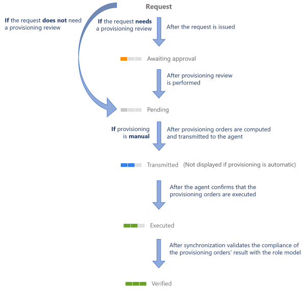

Provision
How to write to an externally managed system.
A word about terminology — Let's clarify the concept of writing to a managed system.
There are two notions involved:
-
Fulfillment — writing to a managed system, manually or automatically
-
Provisioning — writing automatically as provisioning is automated fulfillment
But in everyday conversation, in the interface and in this documentation, we use the term provisioning instead of fulfillment.
Overview
When modeling your connectors, you had to decide what data you wanted Identity Manager to manage within the external systems. You configured your connectors, and among other things you chose the appropriate connections and packages, to manage identities and their entitlements by writing directly to the managed systems. This is done through said connectors' provisioning capabilities. See the Model the Data and Create a Connection topics for additional information.
When changes are performed on identity data, entitlements or the role model inside Identity Manager, provisioning orders are generated in order to actually write said changes to the external systems. These changes can be written automatically or manually. Manual provisioning is used to involve humans and make them act on the external systems, instead of Identity Manager. Automatic provisioning is used to minimize human intervention and trust Identity Manager with role model enforcement in external systems. See the Provision Manually and Provision Automatically topics for additional information.
Provisioning states
Identity Manager handles provisioning by assigning a provisioning state to assignment requests.
Here is the list of provisioning states and their description:
|
Provisioning state |
Description |
|---|---|
|
0—None |
Used for Identity Manager's internal computation. |
|
1—Pending |
The order is ready for provisioning but not sent to the agent. |
|
2—Transmitted |
The agent has collected this order but no feedback has been received yet. |
|
3—Errored |
The agent returned errors. |
|
4—Verified |
The order is provisioned in the synchronized data. |
|
5—Awaiting Approval |
The order is blocked until a review is performed. |
|
6—Inactive |
The order is blocked as it is considered as useless (order in the past). |
|
7—Error |
The role model threw an exception while evaluating the order. |
|
8—Executed |
The agent returned OK. |
These states are detailed with their transitions on the individual pages specific to provisioning review, manual provisioning and automated provisioning. See the Entitlement Assignment and Review Provisioning topics for additional information.
Provisioning review
For security purposes, provisioning orders sometimes need to be reviewed before being propagated to the managed system. Then, a user with the right entitlements accesses the Provisioning Review page. Users can either approve provisioning orders that will then be unblocked and finally propagated, or they can decline orders that will subsequently be ignored. See the Configure a User Profile topic for additional information.
The review prior to the provisioning of entitlement assignments is usually performed based on the resource type of given identities. For example, the assignment of sensitive entitlements will require a review before being provisioned, whereas basic rights can be assigned at once. Therefore, resources must be carefully classified beforehand. See the Classify Resources topic for additional information.
Participants and Artifacts
This operation should be performed in cooperation with the staff in charge of managed systems.
|
Input |
Output |
|---|---|
|
Connector's data model (required) |
Provisioned system |
See the Model the Data , Classify Resources , Create a Provisioning Rule , and Create Roles in the Role Catalog topics for additional information.
Perform Provisioning
In order to perform the provisioning you have to:
-
Choose whether to adjust your resource types to implement provisioning review
-
Choose whether to adjust your connections to implement manual and/or automated provisioning
Verify Provisioning
In order to verify the process:

Step 1 – Select a test user in the directory, accessible from the home page.
Step 2 – Follow the manual assignment workflow to make a change in one of their entitlements, which involves the type of provisioning that you want to test.

Step 3 – Check the provisioning state of the requested entitlement at every step, in the user's View Permissions tab.

Whether your provisioning workflows trigger provisioning review, or whether they trigger manual or automated provisioning, below is the global state schema.